Downloadable Offline HTML/JS Games for Managed Chromebooks, Work Computers, Etc.
Last updated: Dec 8th, 2025.
These games are written in pure Javascript (or are programmed to work on an offline file), and cannot be blocked by your computer administrator!
Just download the file, extract it, and run the .html file in your web browser.
ROMs are NOT included for the emulators. You must find those yourself.
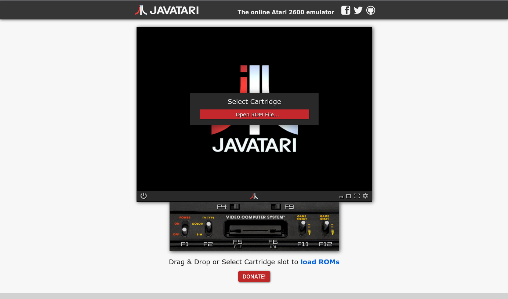
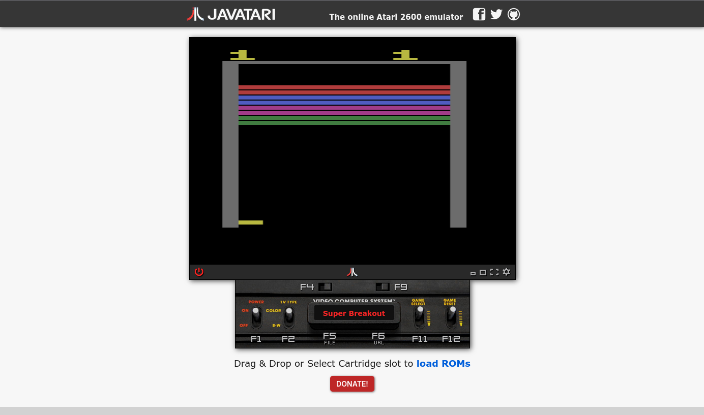
This emulator uses ppeccin's Javatari.js
Last edited: Dec 8th, 2025.
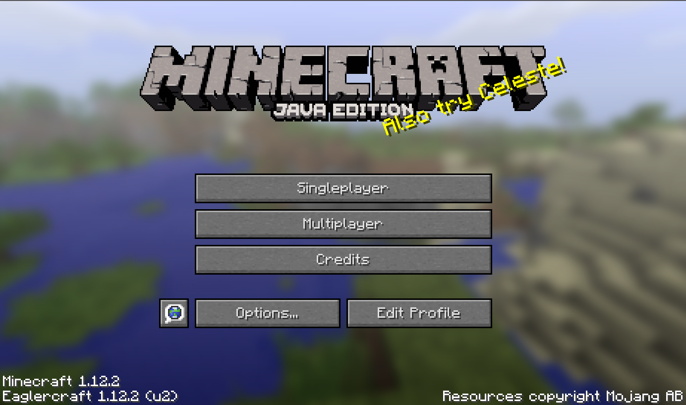
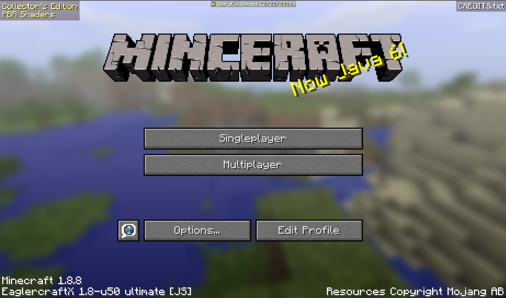
Zip file includes 1.5.2, 1.8.8 1.12.2, Alpha 1.2.6, Beta 1.7.3, EaglyMC, along with their respected WASM versions.
Created by Lax1Dude, PeytonPlayz585, EaglyMC Team, Etc.
Last edited: Sept 7th 2025.
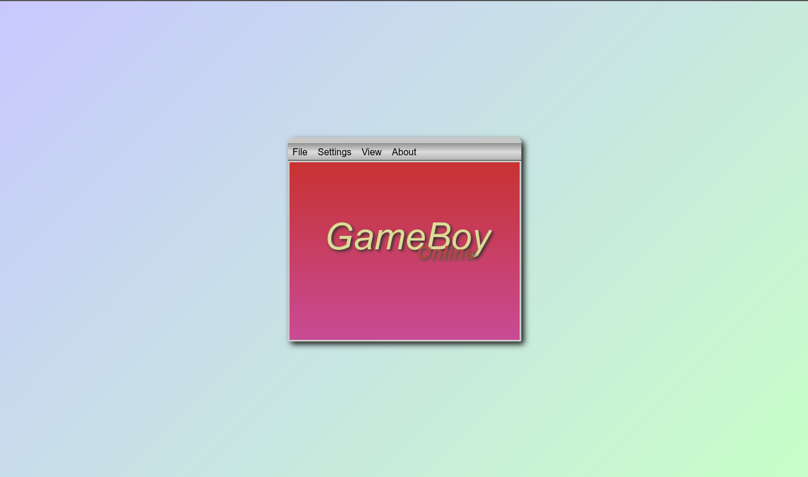
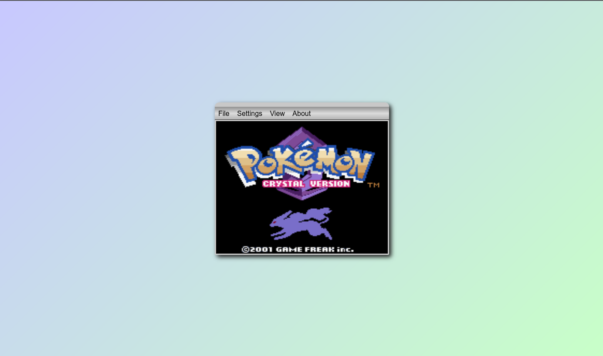
This emulator uses taisel's GameBoy-Online
Last edited: Dec 8th, 2025.
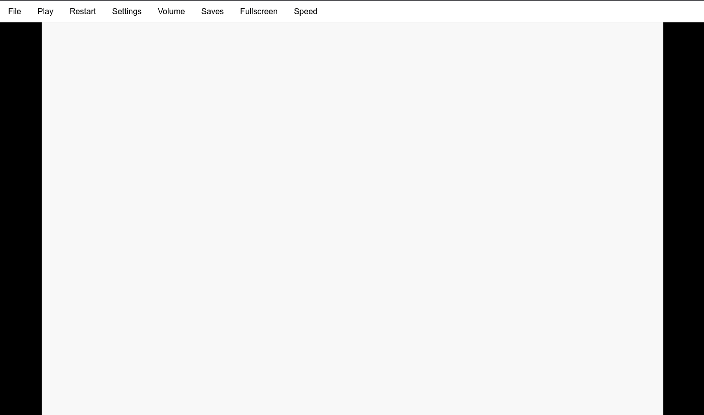
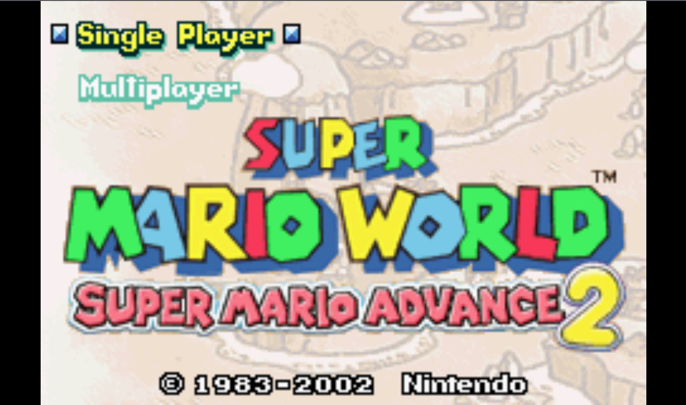
This emulator uses taisel's IodineGBA
An open-source replacement BIOS is located in the emulators directory. This is required for games to boot.
Last edited: Dec 8th, 2025.
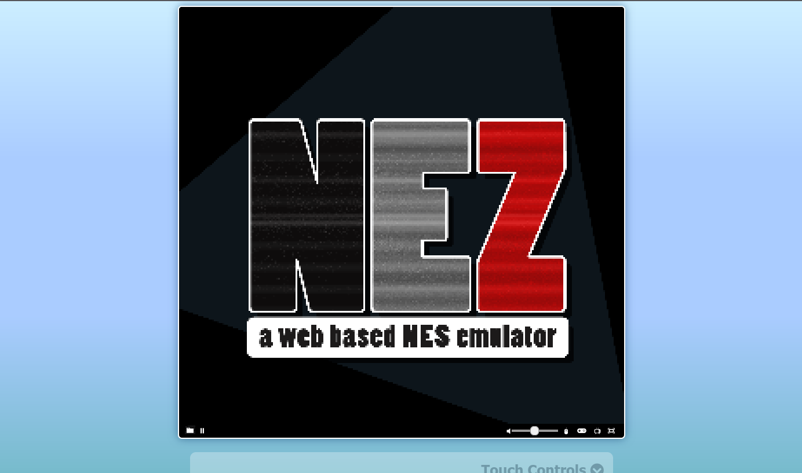
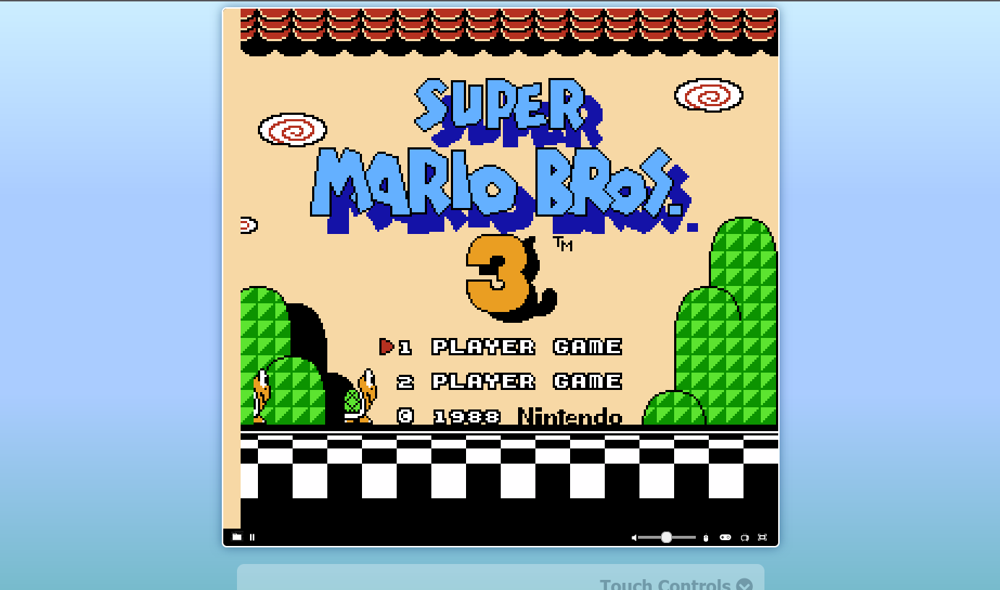
This emulator uses potatolain's nez
Last edited: Dec 8th, 2025.
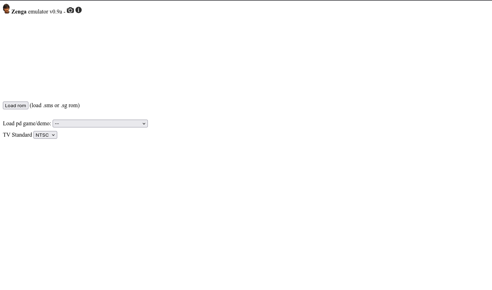
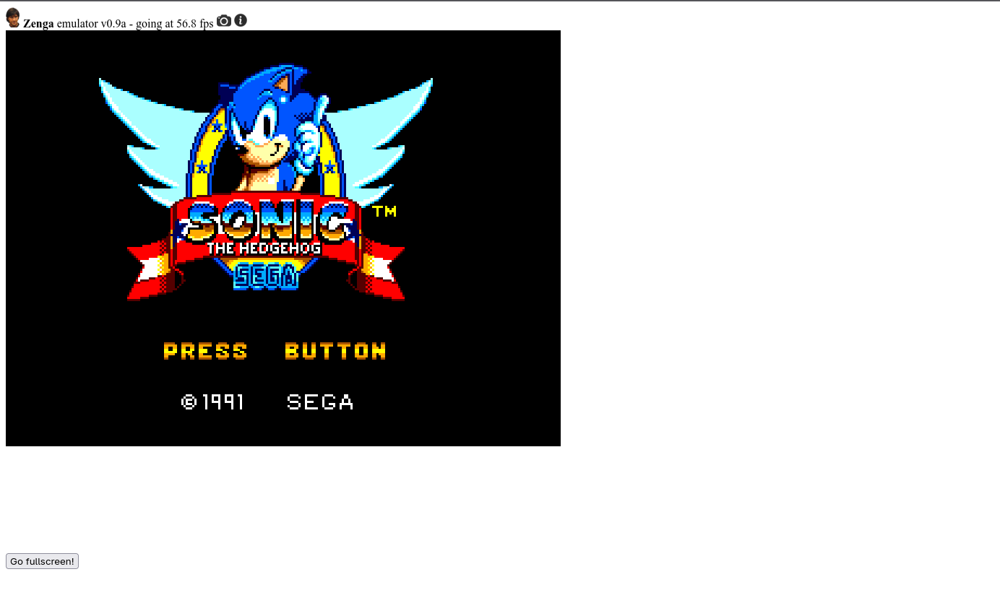
This emulator uses friol's zenga
Last edited: Dec 8th, 2025.
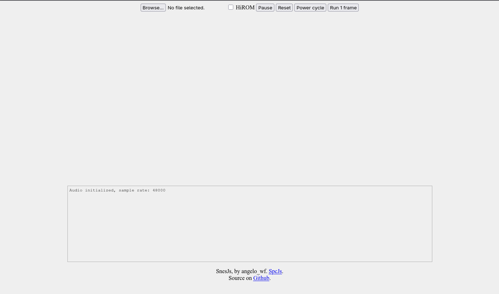
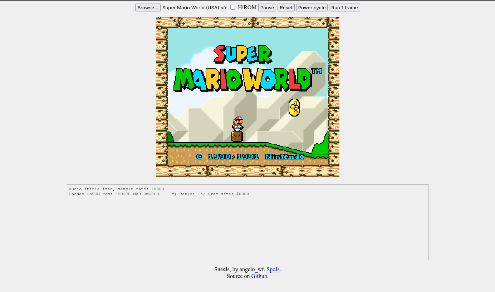
This emulator uses angelo-wf's SnesJs
Emulator runs slowly on most hardware and does NOT emulate sound.
Last edited: Dec 8th, 2025.